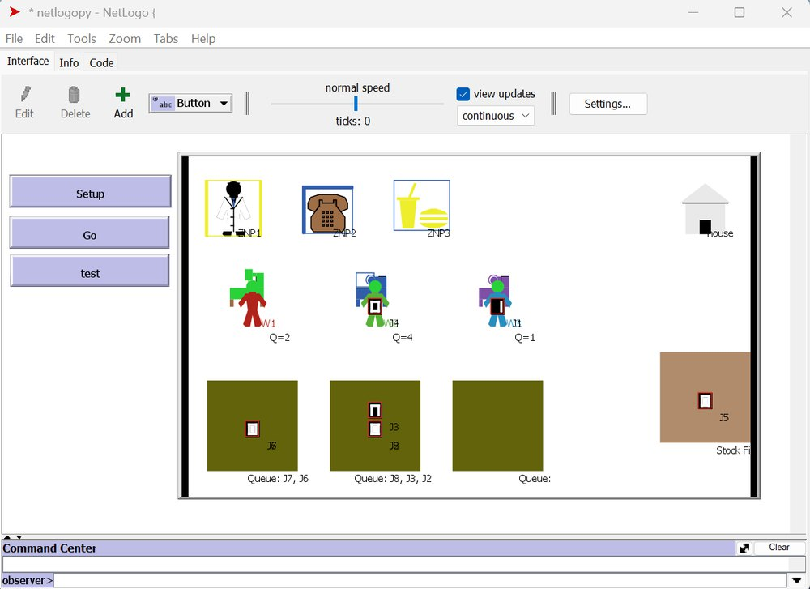
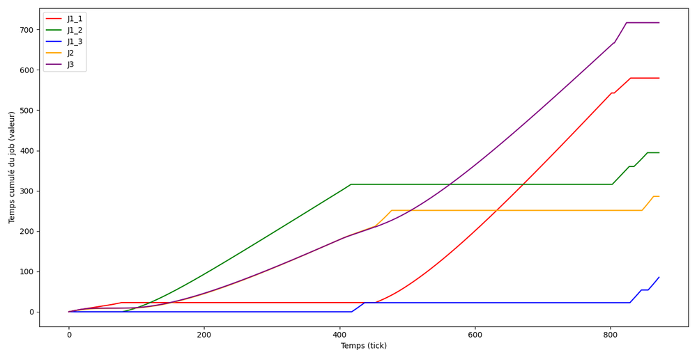
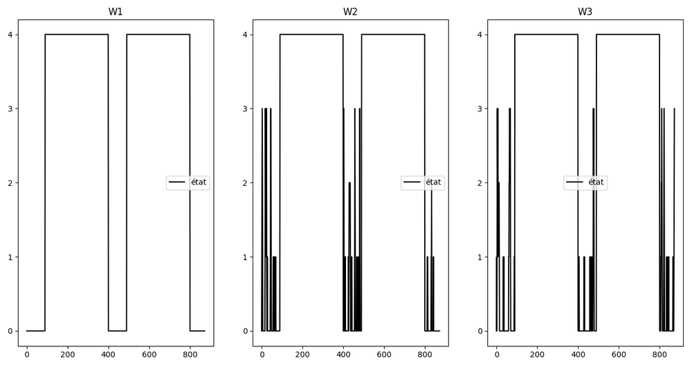
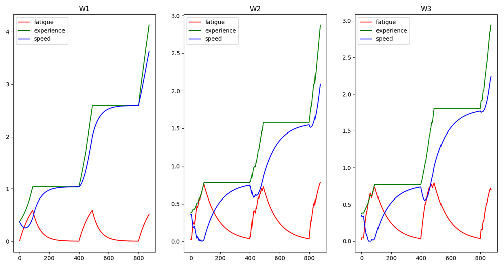
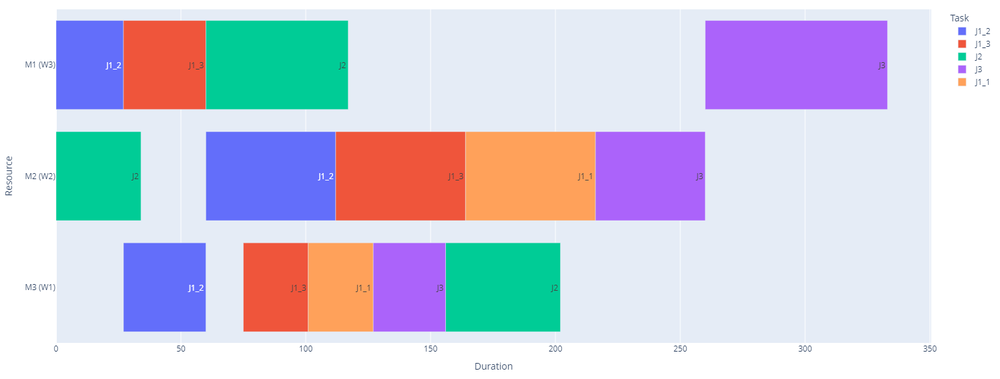

NetLogo est un excellent outil de simulation multi-agents : on y décrit des comportements individuels et on observe ce qui en émerge. Son interface graphique est immédiate, sa bibliothèque de modèles est vaste. Mais il vit à l'écart de l'écosystème Python : peu de bibliothèques d'optimisation, pas de pandas, pas d'apprentissage automatique.
C'était un obstacle direct pour ma thèse : les profils d'opérateurs changent en cours de poste sous l'effet de la fatigue et de l'apprentissage, et une boucle de réoptimisation doit pouvoir intervenir sur la simulation en marche.
Cette quatrième voie existait déjà, mais incomplètement. Les passerelles disponibles permettent de lancer une simulation depuis Python et d'en récupérer les résultats ; elles traitent le modèle comme une boîte noire. Impossible de créer un agent, de l'interroger ou de changer une de ses propriétés pendant que la simulation tourne.
| Bibliothèque | Langage requis | Bibliothèques Python | Simulation gérée depuis Python | Manipulation directe des agents |
|---|---|---|---|---|
| pyNetLogo | Python et code NetLogo | limitées | — | — |
| Py4J | Python et Java | limitées | — | — |
| NL4Py | Python et code NetLogo | oui | — | — |
| Netlogopy | Python seul | oui | oui | oui |
Comparaison présentée au Simulation Workshop 2025.
Sous le capot, la bibliothèque s'organise en couches : une interface Python de haut niveau, un cœur qui gère la connexion, un protocole de communication, et une extension du côté de NetLogo.
Il faut Conda, Java et NetLogo 6.2.2 ou plus récent. La bibliothèque s'installe ensuite depuis PyPI :
pip install netlogopy
La bibliothèque est publiée sous licence MIT : elle est libre d'usage, y compris en entreprise, et le code est consultable.
L'exemple présenté à Exeter est celui de ma thèse : un atelier en environnement dynamique, où l'on cherche à terminer le plus de travaux possible avant un horizon donné. Un solveur d'optimisation, Gurobi, calcule un planning côté Python ; NetLogo le joue avec des opérateurs dont la présence, la fatigue et l'expérience évoluent ; Netlogopy met à jour les agents en cours de simulation selon les décisions du solveur.

Comme tout passe par Python, les indicateurs se tracent pendant que la simulation tourne.




Figures tirées de la présentation au Simulation Workshop 2025 et du support de soutenance.
Netlogopy est publiée et utilisable. Une version développée de l'article a été soumise à une revue en 2025. Les pistes annoncées pour la suite — simulations en 3D, calcul parallèle et accélération par GPU — ne sont pas encore livrées.